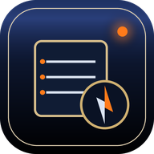

KTS 원클릭
← 원클릭
얼마가 되는지보다,
어디서·어떤 순서로 받는지.
서류를 올리거나 버튼 4개만 고르면 —
지금 가능한 곳과 한도, 앞으로 뽑을 수 있는 최대 한도, 그 한도를 지키는 매출·부채 유지선,
순서를 잘못 잡으면 막히는 함정까지 한 장으로 나옵니다.
① 서류로 한 번에 사진 · PDF 여러 장
올린 서류가 없어도 아래 버튼 4개로 바로 진단됩니다.
② 버튼 4개만 고르세요 10초
이 화면은 참고용 길라잡이입니다. 실제 한도·금리·자격은 기관 심사와 정책 변경에 따라 달라지므로,
신청 전 기관 상담과 세무사 확인을 거치세요. 개인정보는 저장·전송하지 않습니다.
① 지금 가능한 곳과 한도 위에서부터 순서대로
② 앞으로 뽑을 수 있는 최대 한도 12~24개월 목표
최대 대출(보증 포함)-
지켜야 할 연매출-이 선을 넘겨야 다음 단계가 열립니다
부채 상한-이 선을 넘으면 보증·정책자금이 막힙니다
부채비율 유지선-200% 이하 유지가 안전
③ 순서 함정 — 지금 받으면 나중에 막히는 것
④ 이 순서로만 하세요 1 → 2 → 3
절대 금지선
보관 · 공유
인쇄하면 위 1·2·3 순서와 금지선만 종이 한 장으로 나옵니다. 상담 때 그대로 보여 주세요.